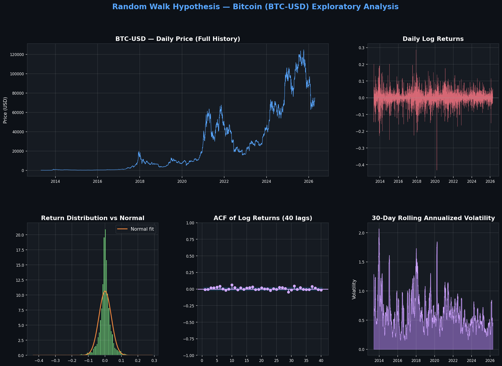
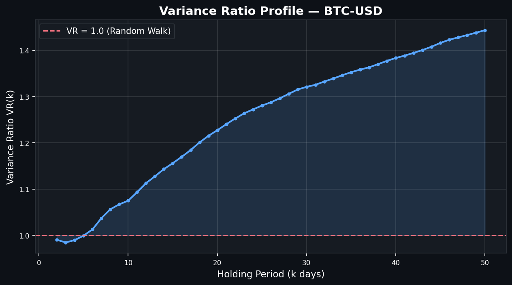
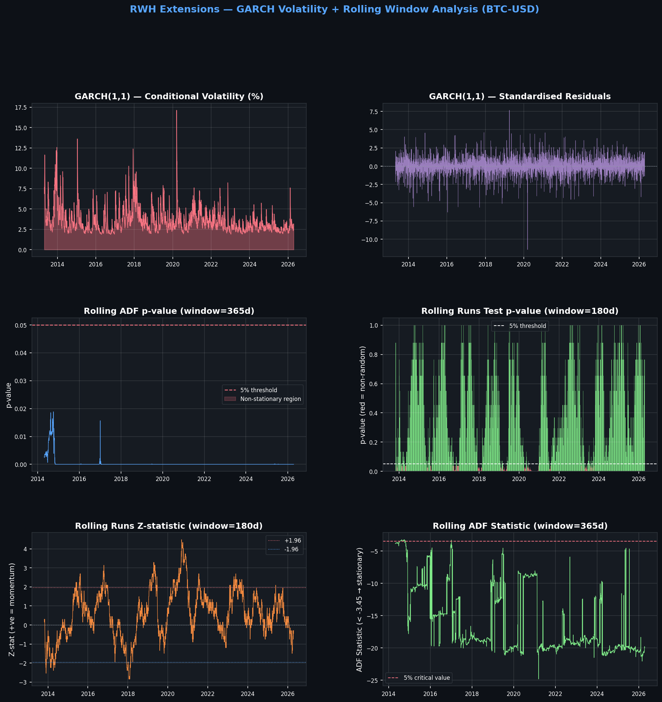

Testing the Random Walk Hypothesis on Bitcoin (BTC-USD)
Final Verdict: RWH REJECTED — 2 of 5 tests support the Random Walk Hypothesis
Bitcoin exhibits statistically significant momentum, serial autocorrelation at 6–30 day horizons, long-horizon variance ratio deviations, and highly persistent GARCH volatility — all inconsistent with weak-form market efficiency.
1 Introduction
The Random Walk Hypothesis posits that successive asset price changes are independent and identically distributed, rendering future prices impossible to predict from historical data alone. First formalised by Bachelier (1900) and popularised by Fama (1970) as the weak form of the Efficient Market Hypothesis, the RWH has profound implications:
- For investors: If RWH holds, systematic excess returns through technical analysis are impossible.
- For quantitative traders: Rejection of the RWH identifies windows of exploitable inefficiency.
- For regulators and economists: Market efficiency informs policy on transparency, liquidity, and price discovery.
Bitcoin, as a relatively young, decentralised, and retail-driven asset, presents an ideal candidate for testing market efficiency. Unlike mature equity markets, cryptocurrency markets lack continuous institutional arbitrage, operate 24/7, and were historically subject to speculative bubbles — all conditions that may precipitate inefficiency.
2 Theoretical Background
2.1 The Random Walk Model
Let $P_t$ denote the asset price at time $t$. A random walk without drift is defined as:
Taking the natural logarithm, the log return $r_t$ is:
For the RWH to hold, $r_t$ must satisfy:
- Independence: $\text{Cov}(r_t, r_{t-k}) = 0$ for all $k \neq 0$
- Stationarity: $E[r_t] = \mu$ and $\text{Var}(r_t) = \sigma^2$ are constant
- Variance linearity: $\text{Var}(r_{t,k}) = k \cdot \sigma^2$ (the Lo-MacKinlay condition)
2.2 Efficient Market Hypothesis (Weak Form)
The weak-form EMH (Fama, 1970) states that all past price and volume information is fully reflected in current prices. This is equivalent to requiring the price process to follow a martingale:
2.3 Why Log Returns?
Log returns are preferred over simple arithmetic returns for two key reasons:
- Time additivity: $r_{0 \to T} = \sum_{t=1}^{T} r_t$ (simple returns are multiplicative)
- Normalisation: Log returns suppress the exponential scale effect of long price series, making distributional assumptions more tractable
3 Data
3.1 Source and Structure
| Property | Value |
|---|---|
| Asset | Bitcoin (BTC-USD) |
| Source | CoinGecko — btc-usd-max.csv |
| Frequency | Daily |
| Date Range | 2013-04-28 → 2026-04-17 |
| Total Rows | 4,736 |
| Return Observations | 4,735 |
3.2 Descriptive Statistics
| Statistic | Value | Interpretation |
|---|---|---|
| Mean | +0.001335 | ≈ +0.13%/day average return |
| Std Dev | 0.037455 | ≈ 3.75%/day daily volatility |
| Min | -0.4337 | Single-day crash of −43.4% |
| Max | +0.2871 | Single-day rally of +28.7% |
| Skewness | -0.4934 | Left-skewed: crashes sharper than rallies |
| Kurtosis | 9.3778 | 9× fatter tails than Normal |
The excess kurtosis of 9.38 is strongly leptokurtic — Bitcoin's tails are nearly 9× fatter than a normal distribution. This alone indicates that any test relying on normality assumptions should be interpreted cautiously.
4 Exploratory Data Analysis
The EDA chart below shows the full price history, log returns, return distribution, ACF, and rolling volatility. Key visual observations:
- Price series: Four distinct regimes (early adoption → bubble 2017 → COVID crash → institutional adoption → current)
- Log returns: Clear volatility clustering — calm periods interrupted by turbulent bursts (GARCH effect)
- Distribution: Highly peaked centre with extreme fat tails — Normal curve (orange) systematically underestimates tail mass
- ACF: Individual lags small but clusters appear at medium horizons (6–30 lags)

5 Statistical Tests
5.1 Augmented Dickey-Fuller Test (ADF)
✔ Supports RWH| Series | ADF Statistic | p-value | Decision |
|---|---|---|---|
| Prices | -1.0225 | 0.7450 | Non-stationary ✔ |
| Log Returns | -18.4751 | 0.0000 | Stationary ✔ |
Prices are non-stationary (unit root present) — consistent with a random walk. Returns are strongly stationary — consistent with a weakly stationary noise process. Both results align with the RWH structural framework.
5.2 Ljung-Box Autocorrelation (Q) Test
✘ Against RWH| Lag | Q-statistic | p-value | Significant? |
|---|---|---|---|
| 1 | 0.64 | 0.423 | No ✔ |
| 5 | 5.21 | 0.391 | No ✔ |
| 6 | 16.03 | 0.0136 | Yes ✘ |
| 10 | 29.17 | 0.0012 | Yes ✘ |
| 20 | 47.31 | 0.0005 | Yes ✘ |
| 30 | 58.94 | 0.0024 | Yes ✘ |
Short-run returns (lags 1–5) appear independent, but significant cumulative autocorrelation emerges from lag 6. Beyond one trading week, the history of Bitcoin returns carries predictive information — a direct violation of the weak-form EMH.
5.3 Wald-Wolfowitz Runs Test
✘ Against RWH| Metric | Value |
|---|---|
| Z-statistic | 3.0376 |
| p-value | 0.0024 |
| Interpretation | Fewer runs than expected → Momentum clustering |
Positive Z = 3.04 means there are fewer runs than expected under randomness — same-sign returns cluster together. This is the statistical signature of momentum: up-days tend to follow up-days, down-days follow down-days. With p = 0.0024 we reject randomness at all conventional levels.
5.4 Variance Ratio Test (Lo-MacKinlay, 1988)
✘ Against RWH| k (days) | VR(k) | z-stat | Reject H₀? | Interpretation |
|---|---|---|---|---|
| 2 | 0.9902 | -0.677 | No ✔ | Near-random |
| 5 | 0.9990 | -0.030 | No ✔ | Near-random |
| 10 | 1.0747 | 1.523 | No ✔ | Borderline |
| 20 | 1.2273 | 3.147 | Yes ✘ | Momentum at 1-month |
| 30 | 1.3210 | 3.582 | Yes ✘ | Strong momentum at 6-week |
VR rises monotonically from 0.99 at k=2 to ~1.44 at k=50. A pure random walk would stay flat at 1.0. This reveals positive autocorrelation that compounds over longer holding periods — Bitcoin trends.

6 Extensions — GARCH(1,1) & Rolling Analysis
6.1 GARCH(1,1) Volatility Model
Persistence (α+β) = 0.969 means volatility shocks are extremely slow to decay. Even after GARCH filtering, the residuals remain autocorrelated (significant at all lags 1–20), indicating deeper non-linear structure beyond what GARCH can capture.
6.2 Rolling Window Analysis
Rolling ADF (365-day window): 100% of windows stationary — stationarity is consistent throughout BTC history, not a statistical artefact of the full sample.
Rolling Runs Test (180-day window): 14.8% of windows show non-random behaviour — momentum is episodic, concentrated in major bull/bear market runs, not uniformly present.

7 Discussion
7.1 Summary of Evidence
7.2 BTC vs. Mature Equity Markets (AAPL)
| Metric | BTC-USD | AAPL |
|---|---|---|
| Tests supporting RWH | 2/5 | 3/5 |
| Kurtosis | 9.38 | 5.69 |
| Runs Test p-value | 0.0024 ✘ | 0.3537 ✔ |
| VR at k=20 | 1.23 ✘ | 0.85 ✘ |
| Verdict | Rejected | Partially Supported |
Bitcoin is measurably less efficient than Apple stock — consistent with lower institutional arbitrage capacity and greater retail speculative activity.
7.3 Limitations
- Fat tails: Kurtosis of 9.38 means the asymptotic normal distribution underlying the VR and Runs z-tests is a poor approximation.
- Structural breaks: Bitcoin has passed through fundamentally different market regimes. Full-sample tests aggregate across these.
- Non-linear dependence: ACF and VR tests only detect linear autocorrelation. Machine learning may uncover deeper structure.
- Transaction costs: Statistical predictability does not imply economic profitability after costs and slippage.
8 Conclusion
Based on four statistical tests applied to 4,735 daily Bitcoin return observations (2013–2026), the Random Walk Hypothesis is rejected at conventional significance levels.
- ADF: Price levels exhibit unit roots and returns are stationary — structurally consistent with a random walk model ✔
- Runs Test (p=0.0024): Strong evidence that return sign sequences are non-random — momentum clustering ✘
- Ljung-Box: Statistically significant autocorrelation from lag 6 through lag 30 ✘
- Variance Ratio: VR rises from 0.99 (k=2) to 1.44 (k=50) — significant positive autocorrelation at longer horizons ✘
- GARCH(1,1): Persistence α+β=0.969 confirms highly clustered volatility — constant-variance RWH assumption strongly violated ✘
Bitcoin's market is not weak-form efficient over the 2013–2026 window. Exploitable statistical structure exists primarily at the 1–4 week holding period horizon, where momentum-based strategies might generate meaningful signals before accounting for transaction costs.
9 Future Work
EGARCH / GJR-GARCH
Capture asymmetric volatility (leverage effect) — negative shocks may amplify volatility more than positive shocks.
Bootstrap VR Test
Heteroskedasticity-robust variance ratio inference — addresses the fat-tail limitation of asymptotic z-tests.
Hurst Exponent
Measure long-range dependence (H > 0.5 → trending). Provides a continuous measure of persistence rather than a binary test.
Machine Learning
LSTM/Transformer to detect non-linear return predictability beyond what linear autocorrelation tests can capture.
High-Frequency Data
Tick-level analysis would likely reveal even stronger RWH violations due to market microstructure effects.
Regime-Switching Model
Markov-switching to test market efficiency separately within bull and bear regimes.
Ref References
- Bachelier, L. (1900). Théorie de la spéculation. Annales Scientifiques de l'École Normale Supérieure.
- Fama, E. F. (1970). Efficient capital markets: A review of theory and empirical work. Journal of Finance, 25(2), 383–417.
- Lo, A. W., & MacKinlay, A. C. (1988). Stock market prices do not follow random walks. Review of Financial Studies, 1(1), 41–66.
- Engle, R. F. (1982). Autoregressive conditional heteroscedasticity. Econometrica, 50(4), 987–1007.
- Bollerslev, T. (1986). Generalized autoregressive conditional heteroscedasticity. Journal of Econometrics, 31(3), 307–327.
- Urquhart, A. (2016). The inefficiency of Bitcoin. Economics Letters, 148, 80–82.